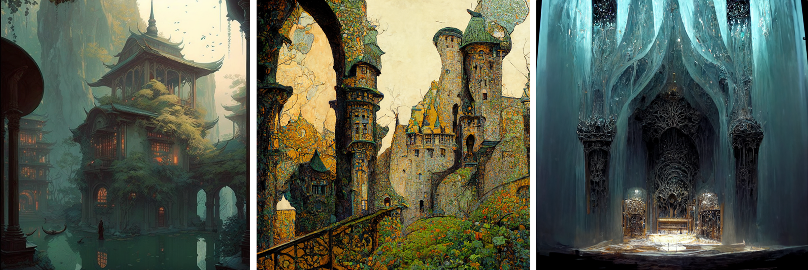
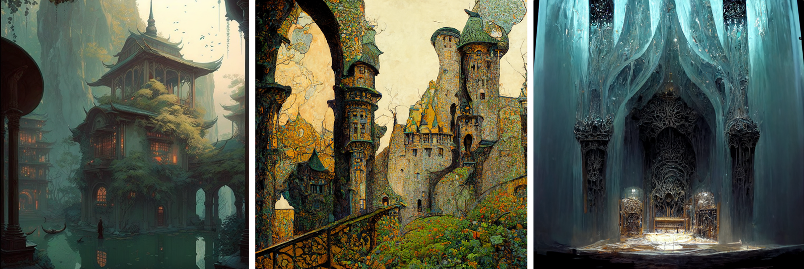

Comic
I'm collaborating with my good friend from college, Alana Korol, to write and draw a comic. We meet weekly to plan out the comic and are just finishing the overarching plot. The comic is a fantasy, LGBTQ+ romance, of a knight who is loyal to her kingdom who meets a witch and discover hidden corruption. I've been using Midjourney to help brainstorm ideas and locations.
I'm collaborating with my good friend from college, Alana Korol, to write and draw a comic. We meet weekly to plan out the comic and are just finishing the overarching plot. The comic is a fantasy, LGBTQ+ romance, of a knight who is loyal to her kingdom who meets a witch and discover hidden corruption. I've been using Midjourney to help brainstorm ideas and locations.
 
